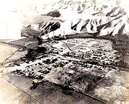
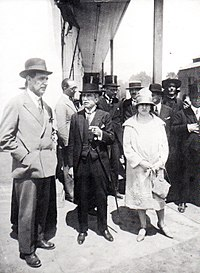

MERCADOS DE PUENTE PIEDRA
El distrito de Puente Piedra es uno de los cuarenta y tres distritos que conforman la provincia de Lima, ubicada en el departamento de Lima, en el Perú. Limita al norte, con el distrito de Ancón; al este, con el distrito de Carabayllo; al sur, con el distrito de Comas, distrito de Los Olivos y el distrito de San Martín de Porres; y al oeste, con el distrito de Ventanilla y el distrito de Mi Perú, Provincia Constitucional del Callao. Su capital es Cercado de Puente Piedra. Dentro de la división eclesiástica de la Iglesia Católica del Perú, pertenece a la Diócesis de Carabayllo.
HISTORIA
Entre los años 1471 - 1493 el Inca Túpac Yupanqui, después de conquistar al pueblo costeño del valle del río Chillón, mandó construir puentes y caminos a fin de facilitar el paso del Ejército Imperial para fortalecer la expansión del Tahuantinsuyo, nombre quechua del Imperio Inca. Es, de esta manera como aparece una piedra muy grande sobre la acequia que se ubicaba en la calle Sáenz Peña y Av. Juan Lecaros que en ese tiempo del incario servía para cruzar los pantanos de la zona en que hoy se encuentra la capital del Distrito, que permitía tomar los caminos por los cerros a Tambo Inga y continuar hasta la Ensenada para cruzar el río Chillón por el puente Inca. Cuando los Incas se enteraron de la proximidad de los españoles, destruyeron los puentes y caminos; la referida piedra terminó en el fondo de la acequia, dejando pasar el agua por sus extremos. El puente inca de la Ensenada fue reconstruido al estilo español y volado en marzo del año 1998 por problemas del Fenómeno del Niño. A medida que los pantanos se iban secando, la parte seca se cubría de grama; esto dio lugar a que Doña Francisca de Aguilar, en ese entonces dueña de Copacabana, pidiera al Virrey Francisco de Borja y Aragón príncipe de Esquilache, XII virrey del Perú de los años 1615 a 1621 la venta de los gramadales. El virrey, después de un estudio respectivo, denegó la petición y lo declaró de uso público con la finalidad de favorecer a los comerciantes que ahí descansaban y alimentaban a sus bestias de carga, para luego continuar su viaje a Chancay. Formadas las haciendas dentro del sistema virreinal, la piedra continuó prestando su servicio de puente aunque el paso se hiciera de, brinco en brinco; pues los pantanos impedían el paso por otro lado, por tal motivo, esta zona pantanosa y despoblada tomó el nombre de "Puente Piedra" en épocas republicanas y cuando las haciendas requerían mayor número de obreros para los cultivos de algodón y la caña de azúcar. En el año de 1870 se construyó el ferrocarril y en su tramo de Lima a Ancón se edificó una estación, que por su proximidad a nuestra referida piedra; se le denominó "Estación de Puente Piedra". Alrededor de ella se formó un caserío y sus habitantes agricultores secaron los pantanos y convirtieron en áreas productivas los gramadales. En el año 1906 apareció el italiano Tomás Marsano, pidiendo al gobierno peruano, la concesión de los gramadales de ambos lados del ferrocarril, desde el puente de piedra hasta Piedras Gordas por el Norte e incluyendo los cerros hasta el mar de Ventanilla por el Oeste. Marsano mencionó el carácter público de Los Gramadales cuando los solicitó ante el Estado para un proyecto de irrigación. Su oponente fue, en este tiempo, Rigoberto Molina, propietario de Copacabana. Tomás Marsano, por su parte, insistía en reclamar ser propietario sobre esos húmedos terrenos, que quedaban al oeste de la hacienda Copacabana, pese a saber que pertenecía al Cabildo de Lima desde el virreinato. Los pobladores hacen frente a Tomás Marsano a través de un proceso judicial amparándose en la tenencia de la tierra, que con mucho esfuerzo lograron poner al servicio de la agricultura. En el año 1918 Tomás Marsano compró legalmente la hacienda Copacabana con un área de 153 fanegadas a Rigoberto Molina, quien con el favor del juez de Primera Instancia Dr. Ernesto Arauji Álvarez en el año 1909 había reinscrito su hacienda incluyendo los Gramadales, según consta en los Registros Públicos de Lima. Al tratar de tomar posesión plena, Marsano invierte sus argumentos y arremete contra los pacíficos agricultores tratando de desalojarlos o imponerles cobros abusivos. Cabe señalar, que la adición de Los Gramadales al Fundo Copacabana se realizó sin presentar un documento que acredite como se habían adquirido estas nuevas tierras y aun así, lograron inscribirla en los registros públicos, por lo que se presume que se cometió "falsedad documentaria" y por lo tanto, hasta la fecha el Fundo Copacabana se encontraría inscrito en los registros públicos de forma irregular.
Los pobladores impidieron la toma de posesión a Tomás Marsano y el 20 de enero de 1921 crearon la "Sociedad de comuneros de Puente Piedra", con Manuel Garay como presidente y compuesta por 55 cabezas de familia. Entre ellos estaban: Tomás, Marcos y Augusto Garay, Eloy Núñez Obispo, Leoncio Padilla o Gregorio Quiroz, Felícita Ortiz, Anco Saco, Martel Barreto y otros. Más tarde, dirigida por Juan Lecaros, la Comunidad enjuicia a Marsano. En 1922 la lucha consigue el más resonante triunfo: se promulga la ley de expropiación de los terrenos de Puente Piedra, que declara dueños a los que actualmente los poseen. El 14 de febrero de 1925, esta organización logró que el presidente Augusto B. Leguía dictara la Ley 5675 que crea al Distrito de Puente Piedra, fijando sus límites y designa a Juan Lecaros como su primer Alcalde y a Manuel Gonzales, Gregorio Quiroz, Luis Montemayor y Eloy Núñez como primeros regidores. De esta forma, el antiguo distrito de Carabayllo pierde así su más importante caserío, la franja marítima de Ventanilla, la estación del tren, el ingenio azucarero y varias haciendas. Igualmente, el banquero peruano Rollin Thorne Sologuren, representante de la Sociedad Agrícola Infantas y Caudivilla, una de las principales sociedades propietarias de tierras agrícolas en el valle de Carabayllo, fue propietario de una importante hacienda agrícola dentro del distrito de Puente Piedra. El distrito fue fundado el 14 de febrero de 1927 mediante Ley N.º 5675, segregandose del distrito de Carabayllo. Tiene una extensión de 71,18 kilómetros cuadrados y una población estimada superior a los 300,000 habitantes. Puente Piedra ubicado en la zona norte de Lima, Un nuevo eje de desarrollo comercial en Lima Norte se viene gestando desde hace algunos años en el distrito de Puente Piedra donde actualmente el comercio crece aceleradamente. Puente Piedra se está convirtiendo en el nuevo polo de inversiones en el sector industrial y comercial de Lima Norte. Luego del ‘boom’ de inversiones privadas en Independencia, Los Olivos y Comas, se suma ahora el distrito de Puente Piedra. que está listo a ser redescubierto como sociedad, atractivo turístico y oportunidad comercial que se proyecta y va en camino a ser uno de los distritos con mayor desarrollo de Lima Norte. Posteriormente hasta la década de los 60's se funda en la parte occidental la ciudad Satélite de Ventanilla, la que finalmente en el gobierno militar en 1969 se crea el Distrito de Ventanilla y a la vez comprendido dentro de la Provincia Constitucional del Callao, perdiéndose más de la mitad de su territorio inicial.
AUTORIDADES
Municipales:
- 2019-2022
- Alcalde: Rennan Santiago Espinoza Venegas, del Partido Democrático Somos Perú.
- Regidores:
- Faustino Fernando Vilca Vargas (Partido Democrático Somos Perú)
- Deysi Saucedo Marín (Partido Democrático Somos Perú)
- Richard Esteban Pérez Chacón (Partido Democrático Somos Perú)
- Ana Luz Calderón Ricappa (Partido Democrático Somos Perú)
- Paola Lizeth Huamán Quispe (Partido Democrático Somos Perú)
- Héctor Luis Adrián Diestra (Partido Democrático Somos Perú)
- Alexander Valentín Pachas Magallanes (Partido Democrático Somos Perú)
- Yois Karolain Zamudio Sánchez (Partido Democrático Somos Perú)
- Miguel Ángel Rodríguez Silupu (Siempre Unidos)
- Wilmer Alberto Rodríguez Gamarra (Siempre Unidos)
- Víctor Adán Jara Márquez (Siempre Unidos)
- Milton Fernando Jiménez Salazar (Solidaridad Nacional)